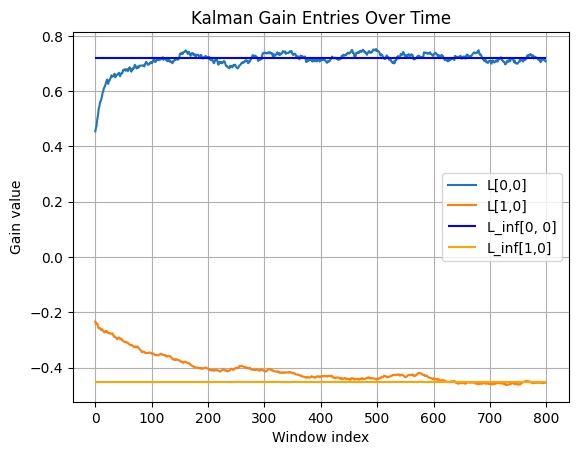

What: Researching estimating optimal Kalman gain for slow time-varying unknown noise covariances.
Why:
To learn more about state estimation and its applications in real situations where noise covariances are unknown.
How: As an undergraduate research assistant for the Controls and Estimation Lab, I research one method of estimating
an optimal Kalman gain for slowly time-varying, but unknown, noise covariances for the system and measurements.
By using a Stochastic Gradient Descent algorithm developed by my PI and modified by me, the algorithm divides a dataset into
smaller time stamps within which the noise covariance is approximated as constant. Then, using multiple trajectories, the data is used to estimate
the optimal Kalman gain for that subset of the time horizon. This is repeated for all subsets to estimate the changing optimal Kalman gain.
This research is still in progress, and I'm excited to continue working on seeing what results I can help find.
